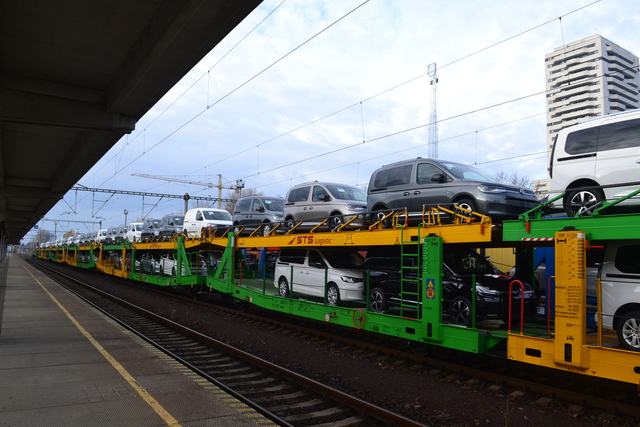
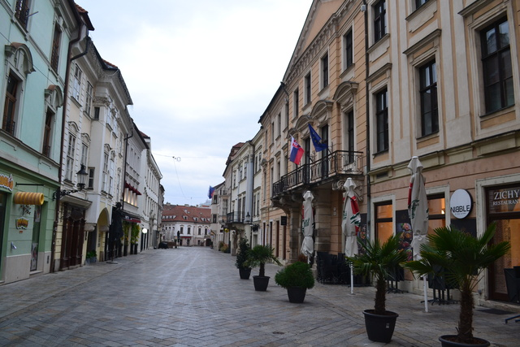
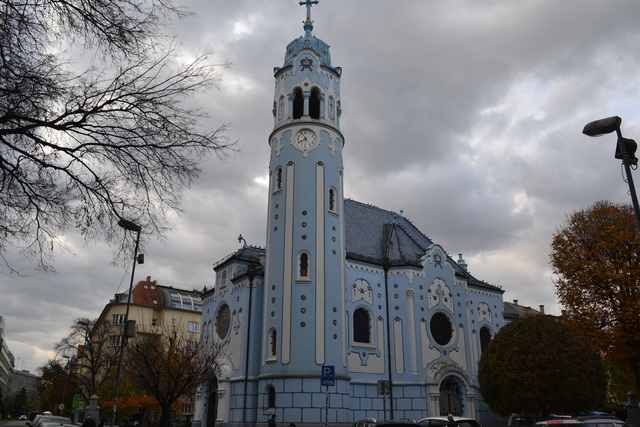

スロバキアの首都ブラチスラバ。自国通貨を維持したハンガリーに対してユーロを採用したスロバキア。ユーロを採用することで輸出の為替リスクを解消し直接投資を呼び込むことで、一人あたりの自動車生産台数は世界トップ、欧州のデトロイトと呼ばれるほどに自動車産業を成長させてGDPが伸びた国。必ずしも経済力が強いとは言えないEU周辺国にとって、自国通貨を維持するのとユーロを入れるのとどちらが望ましいのか。この議論が理論上の二元論ではなく、どちらを選択するにせよ、その選択のメリットを最大限に活用するように自国経済を導くことこそが重要なのだと示した好例がスロバキア。
「青の教会」は青いからこそ有名になった。ピサの斜塔が傾いているからこそ有名になったのと近しいものを感じるし、有名になるためのひとつの条件を提示している気がした。


